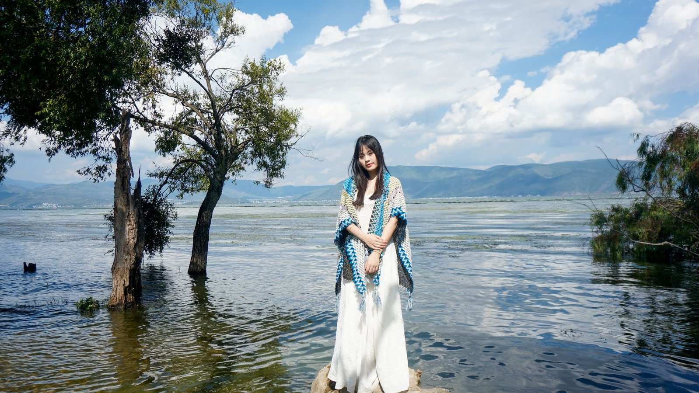

云南大环线 · 双飞 11 日
西安出发｜丽江 · 大理 · 腾冲 · 瑞丽 · 芒市 · 楚雄 · 弥勒 · 元阳 · 建水 · 昆明
11 天 · 西安出发 · 按团队航班排期
11 天走遍滇西滇南大环线，一次看古城、梯田与银杏
¥ 3,490／人起
看行程与费用跟团游 · 西安出发
常规散拼团，价格与行程由组团社提供；与「寻花」主题小团分开展示。
以下 6 条线路均为西安出发，价格含往返大交通（火车线除外）；报名时签订正式旅游合同、开具发票。怎么选，看每条卡片下方的一句话。
共 6 条
西安出发｜丽江 · 大理 · 腾冲 · 瑞丽 · 芒市 · 楚雄 · 弥勒 · 元阳 · 建水 · 昆明
11 天 · 西安出发 · 按团队航班排期
11 天走遍滇西滇南大环线，一次看古城、梯田与银杏
¥ 3,490／人起
看行程与费用
西安⇄昆明｜石林 · 楚雄长街宴 · 大理洱海 · 玉龙雪山 · 丽江古城
6 天 · 西安出发 · 按团期
标准昆大丽：石林 + 洱海 + 玉龙雪山，赠电瓶车与雪山衣氧
价格请询／人起
看行程与费用
西安⇄昆明｜满 15 人升 2+1 陆地头等舱 · 印象丽江 · 洱海巡游车
6 天 · 西安出发 · 按团期
满 15 人升 2+1 陆地头等舱，长途更舒服，含印象丽江演出
¥ 2,780／人起
看行程与费用
西安⇄昆明｜石林 · 洱海游船 · 大理古城 · 玉龙雪山 · 丽江（适老节奏）
6 天 · 西安出发 · 按团期
适老节奏 + 升级 1 晚温泉，适合带父母同游
¥ 2,599／人起
看行程与费用西安⇄昆明｜石林 · 洱海玻璃钢游船 · 大理古城 · 玉龙雪山 · 印象丽江
6 天 · 西安出发 · 按团期
含印象丽江 / 丽水金沙 + 洱海游船，性价比之选
¥ 2,980／人起
看行程与费用
西安⇄昆明｜抚仙湖畔住 7 晚，半自助、无导游、含三餐
10 天 · 西安出发 · 全年恒温 17℃
抚仙湖畔住 7 晚，半自助、无购物，适合长住康养
¥ 2,080／人起
看行程与费用